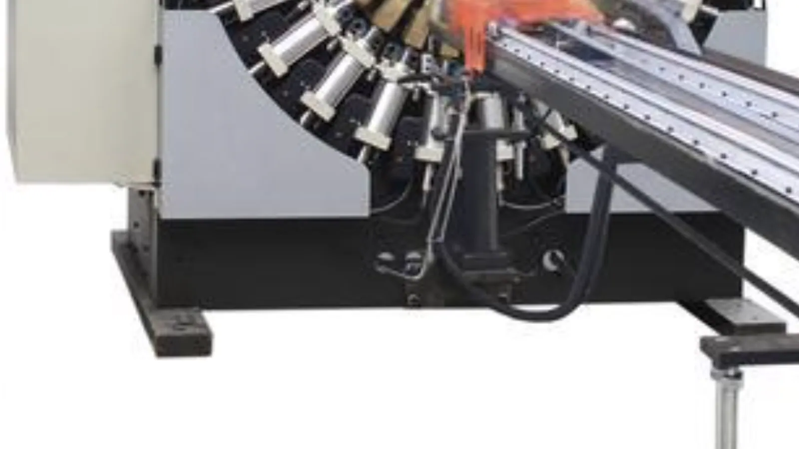
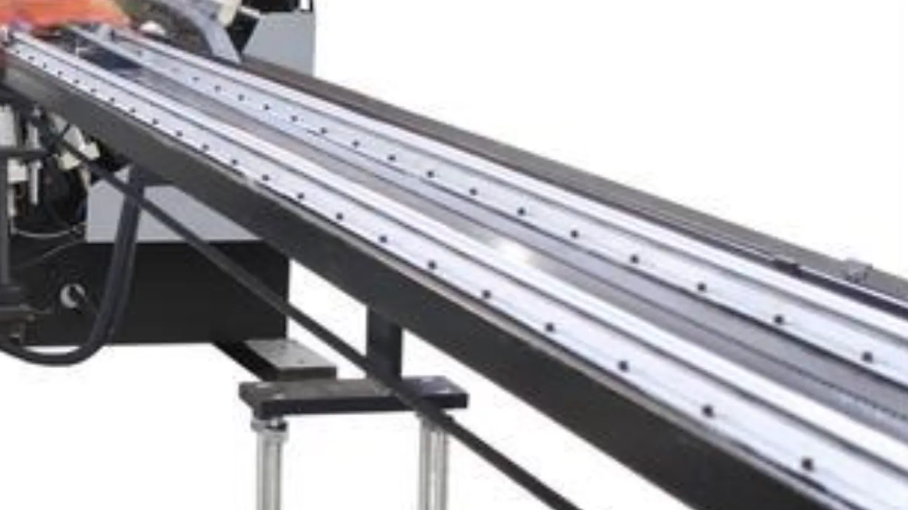
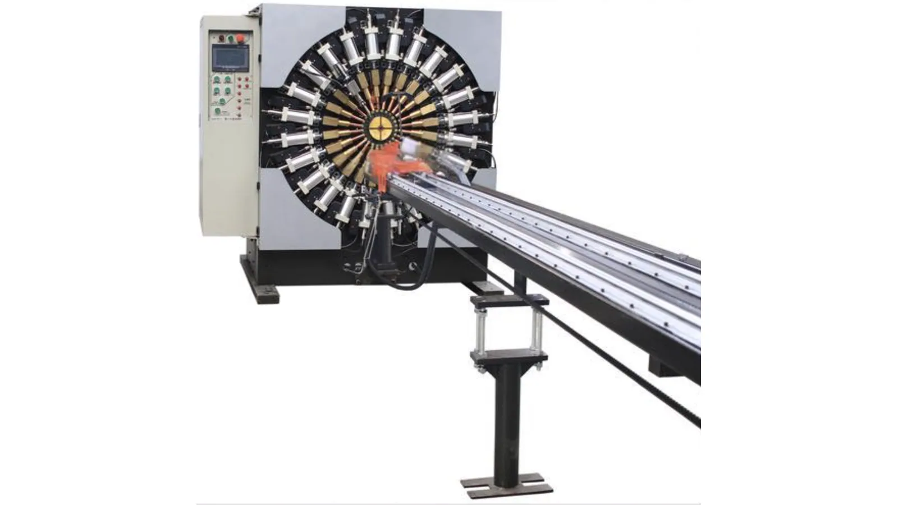

Machine in detail
The machine, the ring welding head and the cage rail that carries the work.



One machine builds the whole filter bag cage: body, head and bottom cover. A 160 kVA transformer design feeds two welding transformers, and the panel is machined in a single gantry pass from 25 mm steel plate so every welding cylinder sits on one plane and points at the cage axis — that alignment is what holds cage straightness. Ring spacing is free: pull the cage with the stepper, stop where you want the ring, and one cage can carry up to 54 support rings. The controller watches each weld, re-welds an abnormal spot automatically, and alarms for manual repair if the wire surface is too rusty or dirty for a re-weld to take.

Cage length, ring count and your grid capacity decide the configuration. Send us the cage drawing and rings per cage — we confirm rail length, transformer pairing and the simultaneous/time-sharing mode on the proforma invoice.
| Weld scope | Cage body, head and bottom cover in one machine |
| Input voltage | 380 V (2-phase live + neutral) or as per customer requirements |
| Grid frequency | 50 / 60 Hz |
| Transformer design capacity | 160 kVA |
| Instantaneous power — upper and lower supports | 80 kVA |
| Instantaneous power — two at the same time | 36 kVA |
| Instantaneous power — two at different times | 18 kVA |
| Ring spacing | Customisable, set on the controller |
| Support rings per cage | Up to 54 |
| Cage pull | Stepper motor, high and medium pull speed |
| Rail length | 7.5 m standard; 9 m, 10 m and other lengths available |
| Transformers | 2 units |
| Air source pressure | 0.6–0.8 MPa |
| Air consumption | 300 L/min |
| Cooling method | Natural cooling |
| Control | Touch-screen HMI with material selection and auto re-weld |
* Specifications as supplied for this model. Final configuration confirmed on the proforma invoice.
The electrical, mechanical and control detail on the cage welder — the same sheet we hand your process engineer.
Two transformers, 160 kVA design capacity
| Transformer design capacity | 160 kVA |
| Transformers | 2 units |
| Upper and lower supports, instantaneous | 80 kVA |
| Two welds simultaneous, instantaneous | 36 kVA |
| Two welds time-sharing, instantaneous | 18 kVA |
| Input voltage | 380 V (2-phase live + neutral) or per customer |
| Grid frequency | 50 / 60 Hz |
| Cooling | Natural cooling |
Stepper pull, free ring spacing, up to 54 rings
| Pull drive | Stepper motor, high and medium speed selectable |
| Ring spacing | Freely set on the controller per cage |
| Rings per cage | Up to 54 support rings |
| Rail length | 7.5 m standard; 9 m and 10 m available |
| Rail guidance | Ball-bearing linear guides for cage straightness |
| Rail connection | Front end connects to the main unit |
25 mm steel panel machined in one gantry pass
| Panel | 25 mm steel plate, machined in one pass on a gantry machining center |
| Alignment | All welding cylinders on one plane, aimed at the cage axis |
| Welds per cage | Body, head and bottom cover |
| Electrode holders | Upper and lower support welding heads |
| Straightness | Held by panel alignment plus ball-bearing linear rail |
Material selection, auto re-weld, alarm for manual repair
| HMI | Touch screen, multilingual, easy for operators from different countries |
| Material selection | Adjusts current waveform for low-carbon, high-carbon and galvanized wire |
| Auto re-weld | Detects abnormal weld spots and re-welds automatically |
| Alarm | Prompts manual repair if auto re-weld fails on rusty or dirty wire |
| Modes | Simultaneous or time-sharing welding |
| Stability | Control system field-tested from equatorial to northern-European conditions |
Air circuit co-developed with SMC and Airtac
| Air-source pressure | 0.6–0.8 MPa |
| Air consumption | 300 L/min |
| Circuit design | Optimized by SMC (Japan) and Airtac (Taiwan) specialists for fast cylinder action |
| Valves | SMC pneumatic valves and fittings |
The machine, the ring welding head and the cage rail that carries the work.


The four things that decide whether a cage comes out straight and weld-perfect.
Ring positions are set in the controller, not by fixed mechanical stops. One cage can carry up to 54 support rings at whatever spacing the filter design calls for, and two pull speeds handle long and short cages.
The welding panel is machined from 25 mm plate in one gantry pass, so all cylinders sit on one plane aimed at the cage axis. Ball-bearing linear guides on the rail finish the job — cage straightness is a geometry problem, not an operator skill.
Each weld is monitored; an abnormal spot triggers an automatic re-weld. If the wire surface is too rusty or dirty for the re-weld to take, an alarm stops the cycle for manual repair — scrap is avoided without hiding a bad weld.
Two welds at once draw 36 kVA, welding them in sequence draws 18 kVA. If your grid is tight you switch to time-sharing mode instead of buying a bigger supply — production continues at the same cage quality.
The touch-screen interface is built for operators from different countries and languages; material selection and ring spacing are menu choices, and the same control set has been field-tested from the equator to northern Europe.
Bag cage production for dust collection and filtration systems.
Power and air you provide for the welder, and what arrives in the crate.
| Input voltage | 380 V (2-phase live + neutral) or as per your requirement |
| Grid frequency | 50 / 60 Hz |
| Transformer design capacity | 160 kVA |
| Compressed air | 0.6–0.8 MPa, 300 L/min |
| Rail space | 7.5 m rail length plus loading and unloading clearance |
| Floor | Level floor along the rail, machine on anti-vibration mounts |
| Grid capacity | Time-sharing mode available if capacity is limited |
What cage producers ask before ordering.
Yes — cage body, head and bottom cover are all welded on the same machine, which is what removes the second station and the extra handling of a nearly finished cage.
Up to 54 support rings, at spacing you set in the controller. Two cage pull speeds, high and medium, cover long baghouse cages and short replacement cages.
The welding panel is machined from 25 mm steel plate in a single gantry pass so every cylinder points at the cage axis, and the rail carries the cage on ball-bearing linear guides. Straightness is built into the geometry rather than corrected by the operator.
The controller detects the abnormal spot and re-welds it automatically. If the wire surface is too rusty or dirty for the re-weld to hold, an alarm tells the operator to repair manually.
Yes. In time-sharing mode the two welds are made one after the other, drawing 18 kVA instead of 36 kVA, so production continues without an upgrade to your incoming supply.
7.5 m is standard, with 9 m and 10 m available. Match the rail to your longest cage plus loading clearance; tell us the cage length range and we confirm.
Cage welders are usually paired with ring forming and the coil side of the shop.

Produces the support rings this cage welder consumes — 2–5 mm wire, up to 300 mm coils.

Hydrogen-oxygen flame unit for stainless and copper joints with no bottled gas.

Automated fit-up and welding for structural H beam production.
Cage diameter and length, rings per cage, wire material and the supply capacity at your wall. An English-speaking engineer replies within one business day with rail length and mode recommendation.